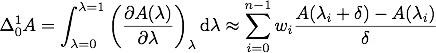
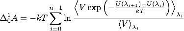

compute fep command¶
Syntax¶
compute ID group-ID fep temp attribute args ... keyword value ...
- ID, group-ID are documented in the compute command
- fep = name of this compute command
- temp = external temperature (as specified for constant-temperature run)
- one or more attributes with args may be appended
- attribute = pair or atom
pair args = pstyle pparam I J v_delta pstyle = pair style name, e.g. lj/cut pparam = parameter to perturb I,J = type pair(s) to set parameter for v_delta = variable with perturbation to apply (in the units of the parameter) atom args = aparam I v_delta aparam = parameter to perturb I = type to set parameter for v_delta = variable with perturbation to apply (in the units of the parameter)
- zero or more keyword/value pairs may be appended
- keyword = tail or volume
tail value = no or yes no = ignore tail correction to pair energies (usually small in fep) yes = include tail correction to pair energies volume value = no or yes no = ignore volume changes (e.g. in NVE or NVT trajectories) yes = include volume changes (e.g. in NpT trajectories)
Examples¶
compute 1 all fep 298 pair lj/cut epsilon 1 * v_delta pair lj/cut sigma 1 * v_delta volume yes
compute 1 all fep 300 atom charge 2 v_delta
Description¶
Apply a perturbation to parameters of the interaction potential and recalculate the pair potential energy without changing the atomic coordinates from those of the reference, unperturbed system. This compute can be used to calculate free energy differences using several methods, such as free-energy perturbation (FEP), finite-difference thermodynamic integration (FDTI) or Bennet’s acceptance ratio method (BAR).
The potential energy of the system is decomposed in three terms: a background term corresponding to interaction sites whose parameters remain constant, a reference term *U*<sub>0</sub> corresponding to the initial interactions of the atoms that will undergo perturbation, and a term *U*<sub>1</sub> corresponding to the final interactions of these atoms:

A coupling parameter λ varying from 0 to 1 connects the reference and perturbed systems:

It is possible but not necessary that the coupling parameter (or a function thereof) appears as a multiplication factor of the potential energy. Therefore, this compute can apply perturbations to interaction parameters that are not directly proportional to the potential energy (e.g. σ in Lennard-Jones potentials).
This command can be combined with fix adapt to perform multistage free-energy perturbation calculations along stepwise alchemical transformations during a simulation run:

This compute is suitable for the finite-difference thermodynamic integration (FDTI) method (Mezei), which is based on an evaluation of the numerical derivative of the free energy by a perturbation method using a very small δ:
where *w*<sub>i</sub> are weights of a numerical quadrature. The fix adapt command can be used to define the stages of λ at which the derivative is calculated and averaged.
The compute fep calculates the exponential Boltzmann term and also the potential energy difference *U*<sub>1</sub>-*U*<sub>0</sub>. By choosing a very small perturbation δ the thermodynamic integration method can be implemented using a numerical evaluation of the derivative of the potential energy with respect to λ:

Another technique to calculate free energy differences is the acceptance ratio method (Bennet), which can be implemented by calculating the potential energy differences with δ = 1.0 on both the forward and reverse routes:

The value of the free energy difference is determined by numerical root finding to establish the equality.
Concerning the choice of how the atomic parameters are perturbed in order to setup an alchemical transformation route, several strategies are available, such as single-topology or double-topology strategies (Pearlman). The latter does not require modification of bond lengths, angles or other internal coordinates.
NOTES: This compute command does not take kinetic energy into account, therefore the masses of the particles should not be modified between the reference and perturbed states, or along the alchemical transformation route. This compute command does not change bond lengths or other internal coordinates (Boresch, Karplus).
The pair attribute enables various parameters of potentials defined by the pair_style and pair_coeff commands to be changed, if the pair style supports it.
The pstyle argument is the name of the pair style. For example, pstyle could be specified as “lj/cut”. The pparam argument is the name of the parameter to change. This is a (non-exclusive) list of pair styles and parameters that can be used with this compute. See the doc pages for individual pair styles and their energy formulas for the meaning of these parameters:
| lj/cut | epsilon,sigma | type pairs |
| lj/cut/coul/cut | epsilon,sigma | type pairs |
| lj/cut/coul/long | epsilon,sigma | type pairs |
| lj/cut/soft | epsilon,sigma,lambda | type pairs |
| coul/cut/soft | lambda | type pairs |
| coul/long/soft | lambda | type pairs |
| lj/cut/coul/cut/soft | epsilon,sigma,lambda | type pairs |
| lj/cut/coul/long/soft | epsilon,sigma,lambda | type pairs |
| lj/cut/tip4p/long/soft | epsilon,sigma,lambda | type pairs |
| tip4p/long/soft | lambda | type pairs |
| lj/charmm/coul/long/soft | epsilon,sigma,lambda | type pairs |
| born | a,b,c | type pairs |
| buck | a,c | type pairs |
Note that it is easy to add new potentials and their parameters to this list. All it typically takes is adding an extract() method to the pair_*.cpp file associated with the potential.
Similar to the pair_coeff command, I and J can be specified in one of two ways. Explicit numeric values can be used for each, as in the 1st example above. I <= J is required. LAMMPS sets the coefficients for the symmetric J,I interaction to the same values. A wild-card asterisk can be used in place of or in conjunction with the I,J arguments to set the coefficients for multiple pairs of atom types. This takes the form “*” or “n” or “n” or “m*n”. If N = the number of atom types, then an asterisk with no numeric values means all types from 1 to N. A leading asterisk means all types from 1 to n (inclusive). A trailing asterisk means all types from n to N (inclusive). A middle asterisk means all types from m to n (inclusive). Note that only type pairs with I <= J are considered; if asterisks imply type pairs where J < I, they are ignored.
If pair_style hybrid or hybrid/overlay is being used, then the pstyle will be a sub-style name. You must specify I,J arguments that correspond to type pair values defined (via the pair_coeff command) for that sub-style.
The v_name argument for keyword pair is the name of an equal-style variable which will be evaluated each time this compute is invoked. It should be specified as v_name, where name is the variable name.
The atom attribute enables atom properties to be changed. The aparam argument is the name of the parameter to change. This is the current list of atom parameters that can be used with this compute:
- charge = charge on particle
The v_name argument for keyword pair is the name of an equal-style variable which will be evaluated each time this compute is invoked. It should be specified as v_name, where name is the variable name.
The tail keyword controls the calculation of the tail correction to “van der Waals” pair energies beyond the cutoff, if this has been activated via the pair_modify command. If the perturbation is small, the tail contribution to the energy difference between the reference and perturbed systems should be negligible.
If the keyword volume = yes, then the Boltzmann term is multiplied by the volume so that correct ensemble averaging can be performed over trajectories during which the volume fluctuates or changes (Allen and Tildesley):
Output info:
This compute calculates a global vector of length 3 which contains the energy difference (U*<sub>1</sub>-*U*<sub>0</sub>) as c_ID[1], the Boltzmann factor exp(-(*U*<sub>1</sub>-*U*<sub>0</sub>)/*kT), or V*exp(-(*U*<sub>1</sub>-*U*<sub>0</sub>)/*kT), as c_ID[2] and the volume of the simulation box V as c_ID[3]. *U*<sub>1</sub> is the pair potential energy obtained with the perturbed parameters and *U*<sub>0</sub> is the pair potential energy obtained with the unperturbed parameters. The energies include kspace terms if these are used in the simulation.
These output results can be used by any command that uses a global scalar or vector from a compute as input. See Section_howto 15 for an overview of LAMMPS output options. For example, the computed values can be averaged using fix ave/time.
The values calculated by this compute are “extensive”.
Restrictions¶
This compute is distributed as the USER-FEP package. It is only enabled if LAMMPS was built with that package. See the Making LAMMPS section for more info.
Default¶
The option defaults are tail = no, volume = no.
(Pearlman) Pearlman, J Chem Phys, 98, 1487 (1994)
(Mezei) Mezei, J Chem Phys, 86, 7084 (1987)
(Bennet) Bennet, J Comput Phys, 22, 245 (1976)
(BoreschKarplus) Boresch and Karplus, J Phys Chem A, 103, 103 (1999)
(AllenTildesley) Allen and Tildesley, Computer Simulation of Liquids, Oxford University Press (1987)